Mapping HPC drives with Samba
Warning
-
Samba now uses campus AD for user authentication, if you are unable to login and have not updated your netid password recently please try updating your netid password before opening a ticket
-
This will only work if your computer has a university IP address. If you are off campus, you can use MSU VPN to obtain an MSU IP, which is available to all graduate students, staff and faculty.
-
If file transfer speed is a concern please use the sftp protocol for transferring large data sets, or use our Globus endpoint
The following tutorial will show you how to map your HPC home or research directory using SMB or CIFS File Sharing.
- Determining your Network Path
- Windows 10
- MacOS Example
- Linux
- Ubuntu Mount Example
- Ubuntu Example (Older Versions)
- More Information
Determining your Network Path
We have the powertools command show-samba-paths to show all
paths of your home and research space:
1 2 3 4 5 6 7 8 9 10 11 12 13 14 15 16 17 18 19 20 21 22 | |
where the paths are the same for Mac and Window computers but with different formats.
Windows 10
Step 1. Enable NetBIOS over TCP/IP on Windows:
- Click on Desktop icon on your Windows 8 screen
- Right click on Network icon on start bar at right hand side and
click on open network and sharing center
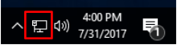 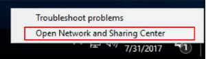 - Click on Change adapter settings
- Right click on your Network interface and click on Properties
- Follow the steps from 1d. in the Windows 7 instruction above to enable NetBIOS over TCP/IP.
Step 2. Disable SMB1
Disable Samba V1 protocol with PowerShell
-
Press the windows start button
-
In the search box type "power shell"
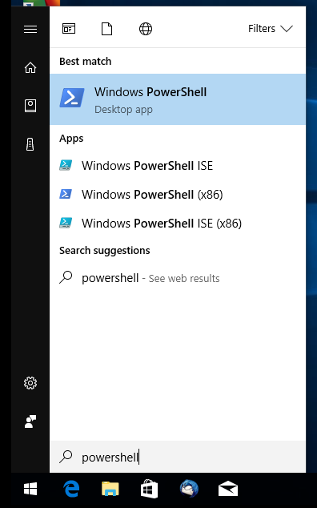 -
Right click on the "Windows PowerShell" icon and select "Run as Administrator"
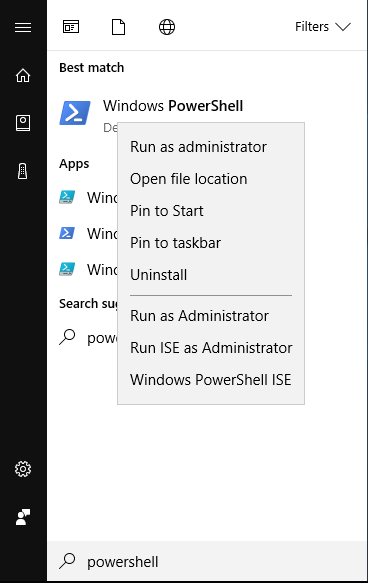 -
Select Ok when security warning appears
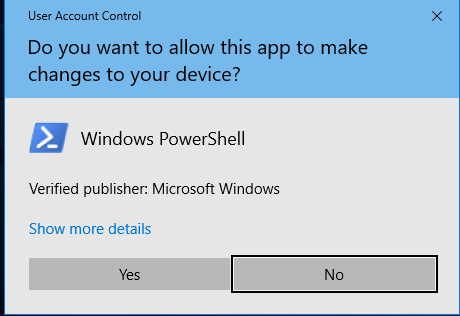 -
Disable Samba V1 by entering the following command into the windows power shell.
1Set-ItemProperty -Path "HKLM:\SYSTEM\CurrentControlSet\Services\LanmanServer\Parameters" SMB1 -Type DWORD -Value 0 -Force -
Ensure SMB V2 and SMB V3 are enabled by entering the follwoing command. In the past, on some versions of windows and for some file systems we recommended the opposite of this setting. Running this ensures it's enabled again.
1Set-ItemProperty -Path "HKLM:\SYSTEM\CurrentControlSet\Services\LanmanServer\Parameters" SMB2 -Type DWORD -Value 1 -Force -
Navigate to "Computer" and click on the text labeled "Map Network Drive" at the top of the screen.
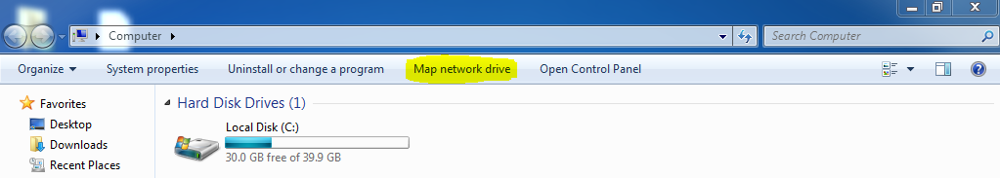
From this menu you need to type your Network Path. Please see #Determining your Network Path for help
-
Once you have typed in your Network Path you need to click on the box "Connect using different credentials." This will open a window where you type in your MSU netid and password: 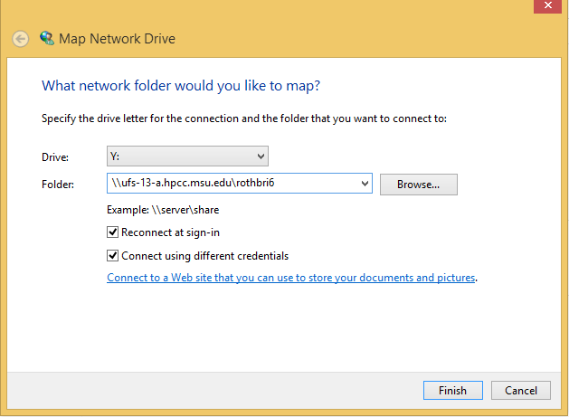
Warning
If you aren't able to sign in, You will need to add "CAMPUSAD\" to the beginning of your username. An indicator of this issue is if Windows displays the error "The specified network password is not correct" in the username dialog window.
For example: substitute "CAMPUSAD\sparty" for username "sparty" in the username field. The slash character is a backslash. A forward slash character will not work.
-
Finally, select "Finish" and you will see your system trying to connect
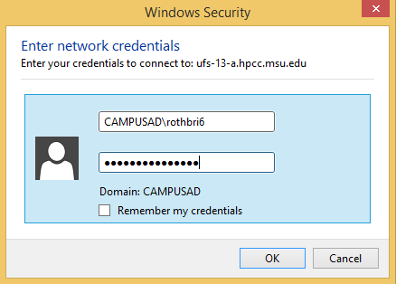
Command-line Windows NetBIOS Commands
If you're working in Windows, you can use command line tools to manage your drive mapping. These commands also work in .bat files, if you're so inclined to connect/disconnect drives in that manner. Note you may also have to Disable SMBV1 and Enable SMB2 per instructions above.
- From the Start Menu -> Run -> type 'cmd' in the box and hit enter, the command shell should open. You can then use the following commands to diagnose, disconnect and connect drives.
1 2 3 4 5 6 7 8 9 10 11 12 13 14 15 16 17 18 19 20 21 22 23 24 25 26 27 28 29 30 31 32 33 34 35 36 37 38 39 40 41 42 43 44 45 46 47 48 49 50 51 52 53 54 55 56 57 58 59 60 61 62 63 64 | |
MacOS Example
Video Tutorial - Map Home directory using MacOS
- Open the Finder.
- Under "GO" click on "Connect to Server"
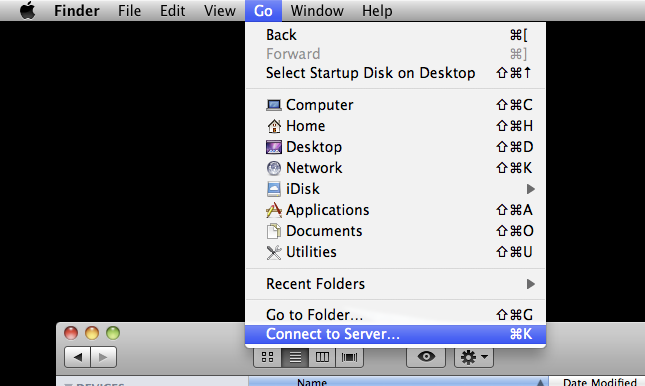 - From this menu you need to type your Network Path. Please
see #Determining your Network
Path for
help.
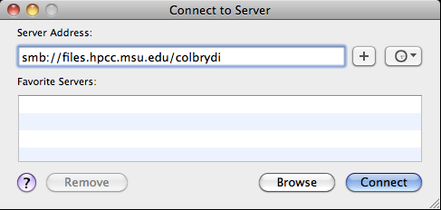 - Enter your MSU NeID and password for authentication and click
"Connect".
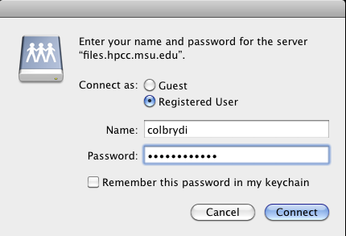
Linux
-
Install smb-client
Ubuntu / Debian
1apt install smbclientRed Hat / Fedora
1yum install samba-client -
Edit /etc/samba/smb.conf
1sudo vi /etc/samba/smb.conf -
Add the following lines to disable samba V1
This step must be completed or your client will not be able to map the drive. If you have other mounts on on the HPC cluster and they are using samba V1 they will stop working. In this case please use SSHFS .
1 2
client min protocol = SMB2 client max protocol = SMB3
Ubuntu Mount Example
- Open a File Browser window. In the "File" menu, select "Connect to
Server..."
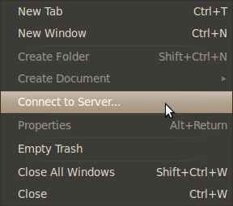 -
Type your network path in the server address box. (Format is the same as the Mac format)
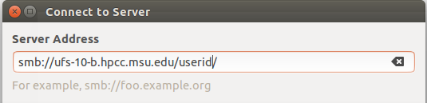 3. Enter your userid and password and click connect.
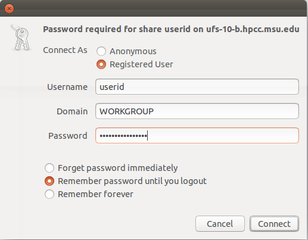 4. If connected properly the drive should appear in the file manager screen.
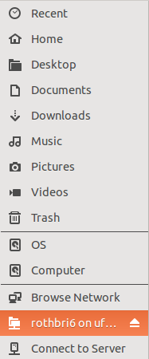
Ubuntu Example (Older Versions)
- Open a File Browser window. In the "File" menu, select "Connect to
Server..."
- In the window that appears, select "SSH" from the drop-down menu
next to "Service type," enter "hpcc.msu.edu" for "Server," enter
"/mnt/home/username" (where username is your NetID) for "Folder,"
and type your username next to "User Name." For quick access to the
drive in future sessions, check the "Add bookmark" box and enter a
descriptive label for "Bookmark name." Once all of this information
has been entered, click "Connect."
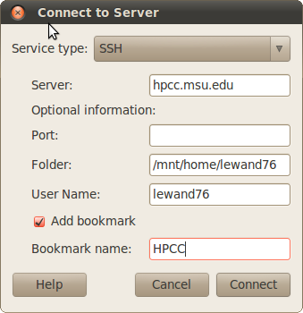 - After a brief delay, a new window will appear, asking for your
password. Enter it, choose whether or not your password should be
saved using the radio buttons, and click "Connect."
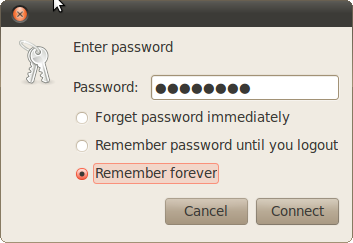 - The password window will then close, giving way to a File Browser
window displaying the contents of your home directory. During future
sessions, access the bookmark you added to reconnect. This can be
done from the "Bookmarks" menu in a File Browser window.
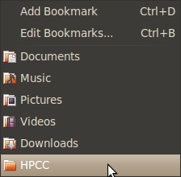